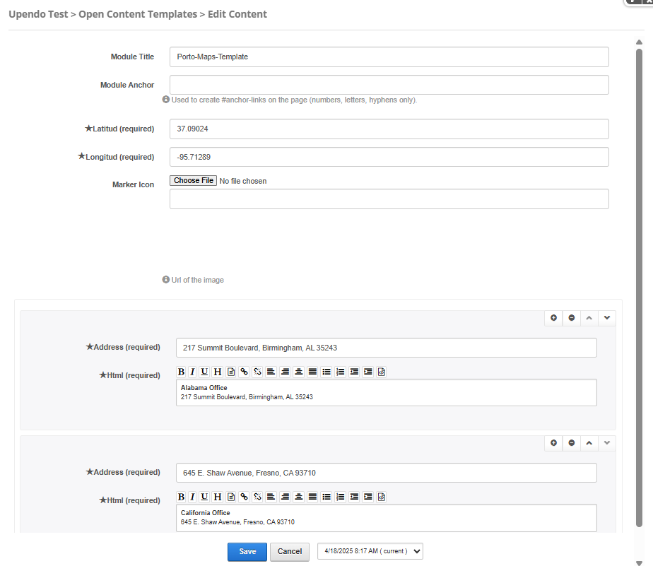

Porto-Maps-Template Documentation
Overview
The Porto-Maps-Template component allows you to create interactive maps with customizable markers, icons, and HTML content. It supports various configurations to match your design needs.
For more details, check out the Porto-Maps-Template repository on GitHub or the Porto documentation.
Usage Example
Edit
Properties
| Property | Data Type | Description | Options / Example |
|---|---|---|---|
| Latitud | String | Defines the latitude of the map's center. This property is required. | 40.7128 (Latitude for New York City) |
| Longitud | String | Defines the longitude of the map's center. This property is required. | -74.0060 (Longitude for New York City) |
| MarkerIcon | String | Defines the URL of the custom marker icon. | https://example.com/marker-icon.png |
| Markers | Array | A list of markers to display on the map. |
|
Settings

Settings Properties
| Property | Data Type | Description | Default Value |
|---|---|---|---|
| Show Borders | Boolean | Specifies whether to display borders around the map. | false |
| Show Control Panel | Boolean | Specifies whether to display the control panel for panning the map. | true |
| Show Zoom Control | Boolean | Specifies whether to display the zoom control on the map. | true |
| Show Map Type Control | Boolean | Specifies whether to display the map type control (e.g., satellite, terrain). | true |
| Show Scale Control | Boolean | Specifies whether to display the scale control on the map. | true |
| Show Street View Control | Boolean | Specifies whether to display the Street View control on the map. | true |
| Show Overview Map Control | Boolean | Specifies whether to display the overview map control on the map. | true |
| Show Scroll Wheel | Boolean | Specifies whether to enable the scroll wheel for zooming on the map. | true |
Views
Note: Ensure that the Latitud and Longitud properties are
set correctly to center the map on the desired location.